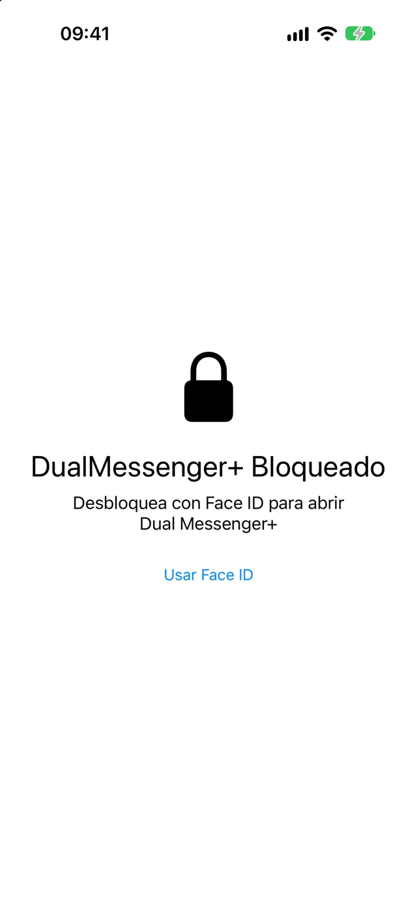
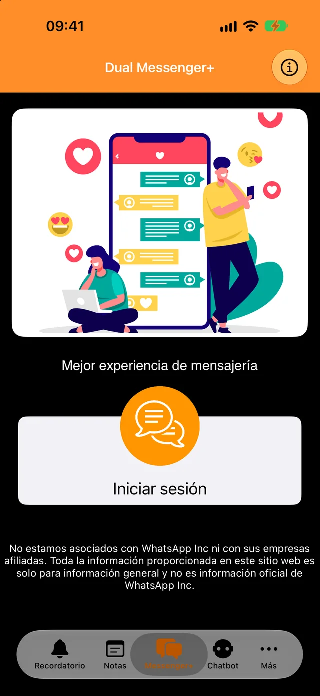
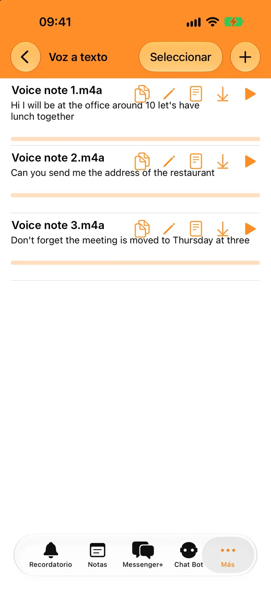
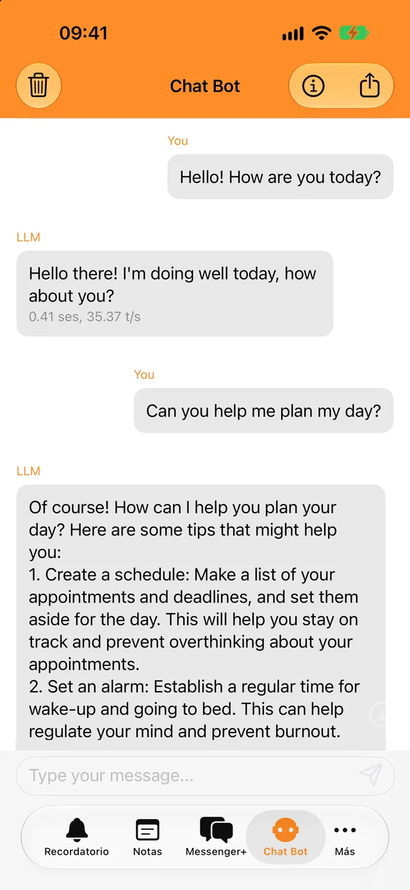
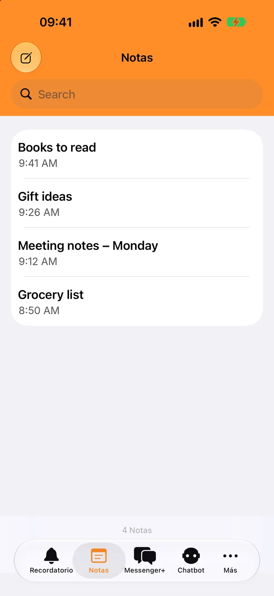

Bloquea con Face ID o con tu código
Solo tú puedes abrir la app y tus chats. Elige si se bloquea al instante o al cabo de unos minutos.
Añade tu segunda cuenta en segundos y mantén separados los chats del trabajo y los personales.
Descarga gratuita. Para iPhone, iPad y iPhone Duo.

Un bloqueo para tus chats y unas cuantas herramientas para el día a día, todo en la misma app.

Solo tú puedes abrir la app y tus chats. Elige si se bloquea al instante o al cabo de unos minutos.

Transcribe mensajes de voz y archivos de audio en tu idioma y copia el texto donde quieras.

Haz preguntas rápidas, incluso sin internet. Tus conversaciones con el bot nunca salen de tu teléfono.

Apunta lo que necesites, encuéntralo con la búsqueda y recibe una notificación cuando llegue la hora del recordatorio.
Necesitas el teléfono donde tienes tu segunda cuenta de WhatsApp, solo un momento.
Toca Iniciar sesión. En la pantalla aparece un código QR.
Ve a Configuración, luego a Dispositivos vinculados, y toca Vincular un dispositivo.
Apunta con ese teléfono al código QR. Tus chats se abren en Dual Messenger+.
WhatsApp mantiene la sesión iniciada en un dispositivo vinculado siempre que uses WhatsApp en tu teléfono al menos una vez cada 14 días.
Dual Messenger+ no tiene servidores que vean tus mensajes. No hay que crear ninguna cuenta, y la app no tiene anuncios ni rastreadores.
Las notas, los recordatorios, las grabaciones y las conversaciones con el bot se guardan en tu iPhone o iPad.
No nos das ni tu nombre, ni un correo electrónico, ni un número de teléfono.
De Face ID y Touch ID se encarga tu dispositivo. La app nunca recibe datos biométricos.
Descarga Dual Messenger+ para iPhone y iPad.
Descargar en el App Store